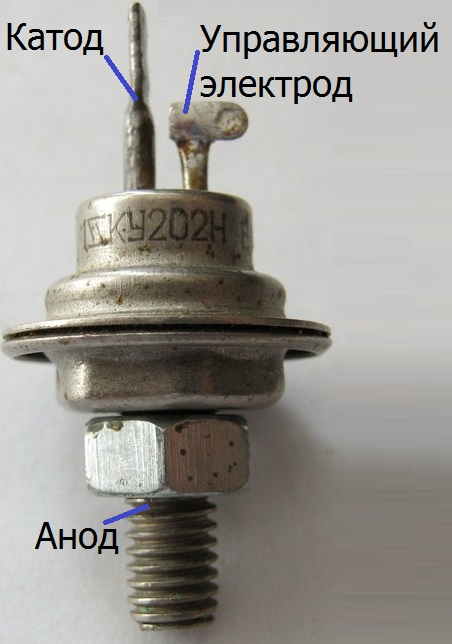
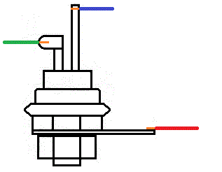
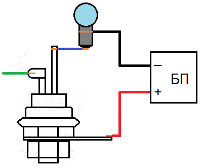
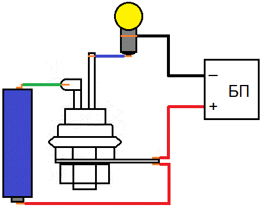
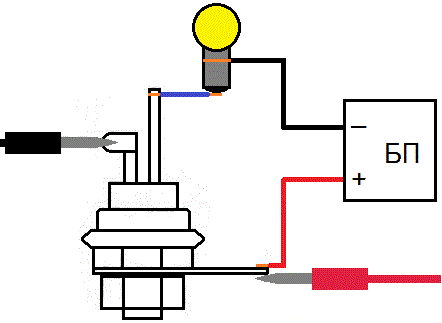
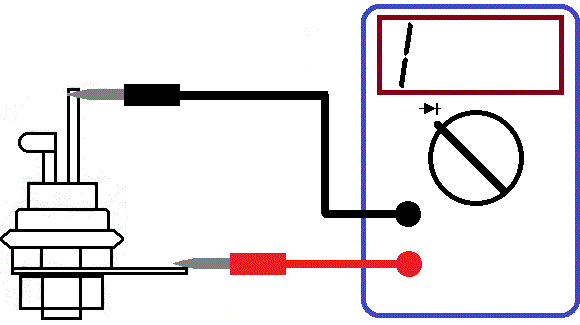
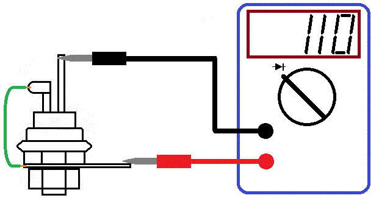
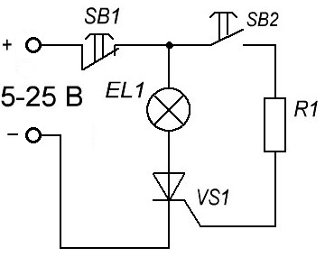
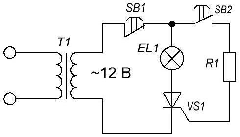
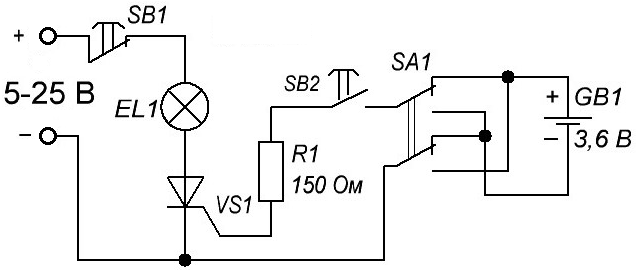

Проверка исправности тринистора

Предварительная проверка тринистора проводится с помощью тестера-омметра или цифрового мультиметра.
- Переключатель цифрового мультиметра установите в положение проверки диодов.
- Проверьте переход управляющий электрод–катод тиристора: величина сопротивления должна быть примерно одинакова при прямом и обратном измерении и находиться в пределах 50–500 Ом
- Проверьте переход анод–катод: величина сопротивления должна быть при прямом и обратном измерении очень большой (на дисплее отображается единица).
Однако, положительный результат такой проверки, не дает гарантию работоспособности тринистора. Некоторые неисправности тринистора мультиметром невозможно определить.
Способ №1 проверки тринистора
Для проверки тринистора понадобятся:
- лампочка,
- провода,
- регулируемый блок питания постоянного тока.
Порядок работы:
- На блоке питания выставляем напряжение загорания лампочки.
- Присоединяем провода к каждому выводу тринистора (рис. 2).

Рис. 2 - - На анод подаем "плюс" от блока питания, на катод - через лампочку "минус" (рис. 3) .

Рис. 3 - - На управляющий электрод подаем относительно анода, отпирающее постоянное напряжение управления Uy , больше чем 0,2 В. Для этого можно взять элемент питания на 1,5 В. Лампочка должна светится (рис. 4).

Рис. 4 -
Можно использовать щупы мультиметра в режиме прозвонки, на щупах напряжение тоже больше 0,2 В.
Рис. 5 - - Убираем батарейку или щупы, лампочка должна продолжать гореть.
Мы открыли тиристор с помощью подачи на управляющий электрод импульса напряжения. Чтобы тиристор опять закрылся, нам надо или разорвать цепь, то есть отсоединить лампочку (убрать щупы), или подать на мгновение обратное напряжение.
Способ №2 проверки тринистора
Для проверки тринистора используем мультиметр в режиме проверки диода.
- Собираем схему как на рис. 6.
- Подключаем щупы мультиметра к аноду и катоду тринистора

Рис. 6 - - На доли секунды замыкаем между собой анод и управляющий электрод. Сопротивление перехода анод-катод тринистора должен резко уменьшиться. Падение напряжения на этом переходе должен быть порядка сотни милливольт. Это означает, что тринистор открылся.

Рис. 7 - - После отпускания мультиметр должен снова показывать бесконечно большое сопротивление. Тринистор закрывается, когда ток удержания стает очень малым. В мультиметре ток через щупы очень малый, поэтому и тринистор закрылся без напряжения на управляющем электроде.
Проверка тринистора при питании схемы постоянным током
В качестве нагрузочного сопротивления и наглядного индикатора работы тринистора, применим маломощную электрическую лампочку на соответствующее напряжение (рис. 8).

Величина сопротивления резистора R1 выбирается из расчета, чтобы ток, протекающий через управляющий электрод–катод, был достаточным для включения тринистора.
Ток управления тринистором пройдет по цепи: плюс (+) – замкнутая кнопка SB1 – замкнутая кнопка SB2 – резистор R – управляющий электрод – катод – минус (-).
Ток управления тринистора для КУ202 по справочнику равен 0,1 А. В реальности, ток включения тринистора около 20–50 мА и даже меньше. Возьмем 20 мА, или 0,02 А.
Основным источником питания может быть любой выпрямитель, аккумулятор или набор батареек.
Напряжение может быть любым, от 5 до 25 В.
Для расчета примем напряжение источника питания U=12 В.
R1 = U : I = 12 : 0,02 = 600 [Ом].
где:
U – напряжение источника питания;
I – ток в цепи управляющего электрода.
Величина резистора R1 будет равна 600 Ом. Если напряжение источника будет, например, 24 В, то соответственно R1 = 1200 Ом.
В исходном состоянии тринистор закрыт, электрическая лампочка не горит. Схема в таком состоянии может находиться сколько угодно долго. Нажмем кнопку SB2 и отпустим. По цепи управляющего электрода пойдет импульс тока управления. Тринистор откроется. Лампочка будет гореть, даже если будет оборвана цепь управляющего электрода.
Нажмем и отпустим кнопку SB1. Цепь тока нагрузки, проходящего через тринистор, оборвется и тринистор закроется. Схема придет в исходное состояние.
Проверка работы тринистора в цепи переменного тока
Вместо источника постоянного напряжения U включим переменное напряжение 12 В, от какого либо трансформатора (рис. 9).

В исходном состоянии лампочка гореть не будет. Нажмем кнопку SB2. При нажатой кнопке лампочка горит. При отжатой кнопке — гаснет. При этом лампочка горит в пол–накала. Это происходит потому, что тринистор пропускает только положительную полуволну переменного напряжения. Если вместо тринистора будем проверять симистор, например КУ208, то лампочка будет гореть в полный накал. Симистор пропускает обе полуволны переменного напряжения.
Проверка тринистора от отдельного источника управляющего напряжения
В этой схеме ток управляющего электрода подается от отдельного источника (рис. 10).

При кратковременном нажатии на кнопку SB2, лампочка так же загорится, как и в случае на рисунке 8. Ток управляющего электрода должен быть не менее 15–20 мA. Запирается тринистор, так же, нажатием кнопки SB1.
Так проверяются не запираемые тринисторы (КУ201, КУ202, КУ208 и др.).
Запираемый тринистор, например КУ204, отпирается положительным полюсом на управляющем электроде и минусом на катоде. Запирается, отрицательным напряжением на управляющем электроде и положительном на катоде.
Менять полярность управляющего напряжения можно с помощью переключателя SA1.
Обратите внимание на то, что запирающий ток тринистора, почти в два раза больше отпирающего. Если тринистор КУ204 не будет запираться, нужно уменьшить величину сопротивления резистора R до 50 Ом.
Источники:
ruselectronic.com - Как проверить тиристор мультиметром